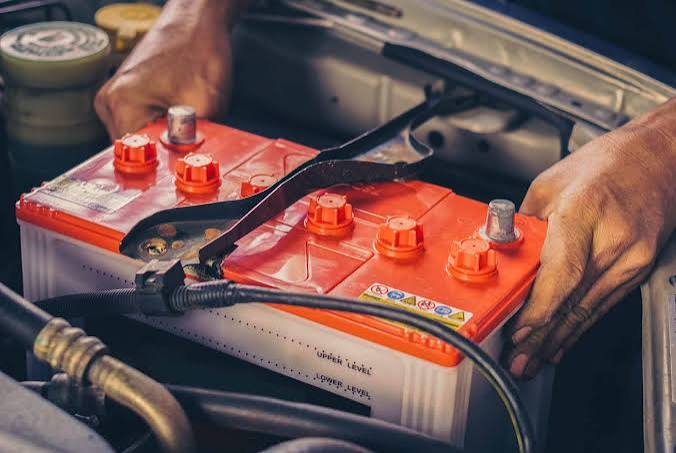

About Car Batteries
The battery provides the power (voltage) required for a vehicle’s electrical control system. Most gasoline-powered cars commonly use a 12V battery, while some diesel vehicles use a 24V system, in which two 12V batteries are connected in series.
Depending on the type of vehicle, batteries come in various shapes and sizes. The battery’s size, capacity, overall dimensions, and the positions of the positive (+) and negative (−) terminals can be identified by reading the numbers and letters printed on the battery.
For example, let’s take a battery labeled 46B24L. The number 46 represents the battery’s capacity/performance rating; it does not mean that it is a “46-size battery.” For example, 65D23 R/L corresponds to approximately 52 Ah (Ampere-hours), 35 105E41 R/L corresponds to approximately 83 Ah, and 46B24L corresponds to approximately 36 Ah.
In 46B24L, the letter B indicates the battery case size (width × height). The standard sizes include:
A = 162 mm (width) × 127 mm (height)
B = 203 mm × 127 mm (or 129 mm)
C = 207 mm × 135 mm
D = 204 mm × 173 mm
E = 213 mm × 176 mm
F = 213 mm × 182 mm
G = 213 mm × 222 mm
H = 220 mm × 278 mm
In 46B24L, the number 24 indicates the length of the battery. 24 means approximately 24 cm, 20 means approximately 20 cm, and 31 means approximately 31 cm in length.
The L in 46B24L stands for Left. It indicates the position of the positive terminal when viewed from the specified orientation of the battery. If R is shown, the positive terminal is on the right side; if L is shown, the positive terminal is on the left side.
If neither R nor L is indicated, the positive and negative terminals are located on the same side of the battery.
By reading the numbers and letters printed on a battery, you can identify its size and specifications accurately, as well as determine the side on which the positive and negative terminals are located.
Credit to the original writer.